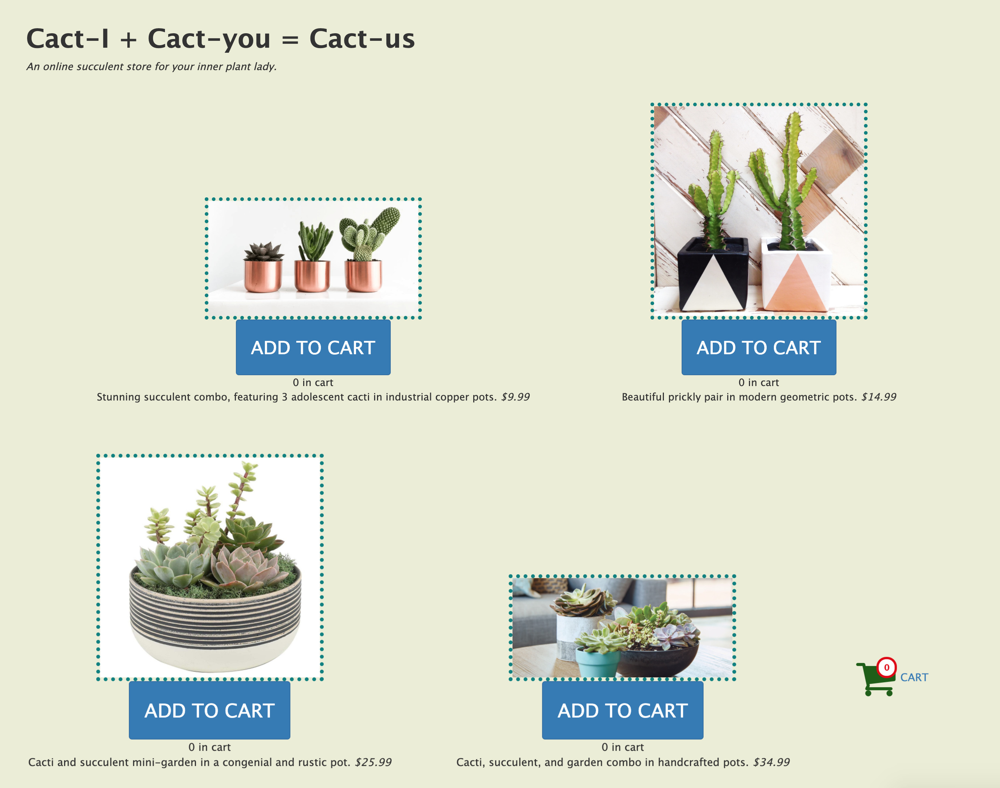
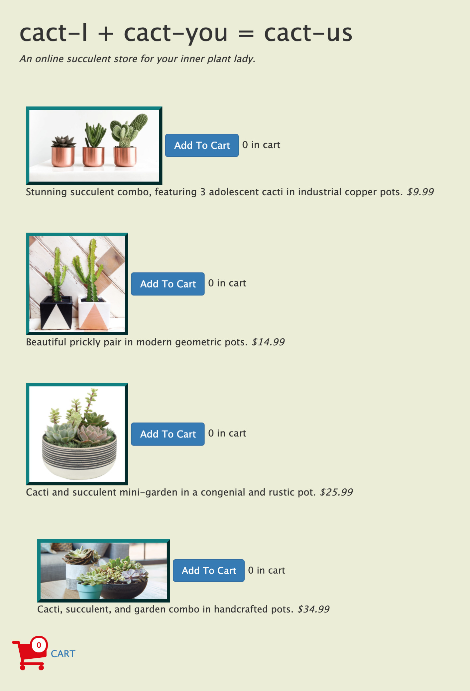
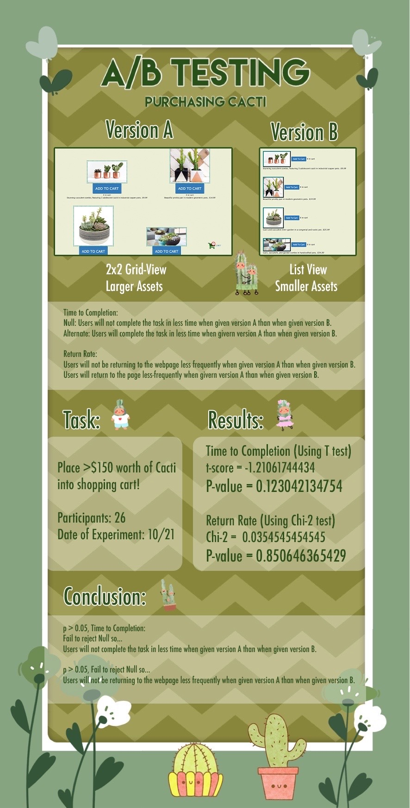

<!doctype html>
<html lang="en">

</html>

<head>
  <!-- Required meta tags -->
  <meta charset="utf-8">
  <meta name="viewport" content="width=device-width, initial-scale=1, shrink-to-fit=no">

  <!-- Bootstrap CSS -->
  <link rel="stylesheet" href="https://stackpath.bootstrapcdn.com/bootstrap/4.5.2/css/bootstrap.min.css"
    integrity="sha384-JcKb8q3iqJ61gNV9KGb8thSsNjpSL0n8PARn9HuZOnIxN0hoP+VmmDGMN5t9UJ0Z" crossorigin="anonymous">

  <title>AB Testing</title>
  <link rel="stylesheet" href="ab_testing.css">
  <!-- TODO: add additional links here! e.g. fonts, icons, more stylesheets, etc. -->
  <link href="https://fonts.googleapis.com/css2?family=Work+Sans&display=swap" rel="stylesheet">
  <meta content="width=device-width, initial-scale=1" name="viewport" />
  <meta charset="utf-8">
</head>

<body>
  <div class="nav-wrapper">
    <nav class="navbar navbar-expand-lg navbar-light" style="width: 100%">
        <a class="navbar-brand" href="#">
            <h1>Kiwi</h1>
        </a>
        <button class="navbar-toggler" type="button" data-toggle="collapse" data-target="#navi">
            <span class="navbar-toggler-icon"></span>
        </button>

        <div class="collapse navbar-collapse" id="navi">
            <ul class="navbar-nav">
                <li class="nav-item">
                    <a class="nav-link" href="../home.html">Projects <span class="sr-only">(current)</span></a>
                </li>
                <li class="nav-item">
                    <a class="nav-link" href="../about.html">About</a>
                </li>
        </div>
    </nav>
</div>
  <!-- TODO: put your HTML code here! -->
  <div class="heading">
    <h1 style="padding-top: 10px">AB Testing</h1>
    <h3 style="padding-bottom: 10px"> Want to buy some Cacti? </h3>
  </div>

  <div class="wrapper">
    <div class="tabs">
      <div class="tab">
        <input type="radio" name="css-tabs" id="tab-1" checked class="tab-switch">
        <label for="tab-1" class="tab-label">Introduction</label>
        <div class="tab-content">
          <div class="flex-col">
            <h4>
              Introduction:
            </h4>
            <p>
              To Accept or Not To Accept the Null, that is the question.
              Statistics, being statistics, doesn't miss the chance to exert its presence in the field of user
              interfaces and user experience.
              A/B testing provides UI researchers a great tool to evaluate the effects of different variations
              introduced.
              Among many methods to analyze the data, in this project, I made a leap of faith to try out the T-test and
              Chi-square with data gathered from A/B versions of a simple website to sell cactus.
              The main metrics of measurement are Time to Completion and Return Rate.
              Though I believe that small variations can generate large effects, it is up to the data to tell
              me if that is the case.
              Let us parse through the numbers to try to reach the truth of user preferences for shopping cacti...!
            </p>
            <h4>
              Time to Completion:
            </h4>
            <p>
              <b><u>Null Hypothesis:</u></b> Users will not complete the task in less time when given version A than
              when given
              version B.
              <br>
              There is no correlation between variations introduced to the websites and the time to complete the task.
              The different layout/border and button size do not affect time to completion.
            </p>
            <p>
              <b><u>Alternate Hypothesis:</u></b> Users will complete the task in less time when givern version A than
              when given
              version B.
              <br>
              The larger button size and the 2x2 layout (instead of 1 column) in version A allows users to complete the
              task in a shorter amount of time. This is because the user will not have to move the mouse over
              longer-distances across the screen to click. This saves time and lets users add their cacti to the cart
              faster.
            </p>
            <br>
            <h4>
              Return Rate:
            </h4>
            <p>
              <b><u>Null Hypothesis:</u></b> Users will not be returning to the webpage less frequently when given
              version A than when given version B.
              <br>
              There is no correlation between variations introduced to the websites and the frequency of returning to
              the website.
              The different layout/border and button size does not frequency of returning to the website.
            </p>
            <p>
              <b><u>Alternate Hypothesis:</u></b> Users will return to the page less-frequently when givern version A
              than when given version B.
              <br>
              The larger picture size and the 2x2 layout grid view (instead of 1 column) allows users to browse all
              choices without scrolling up-and-down back-and-forth when making decisions on which cacti to buy. Thus,
              they can come up with a selection they for sure agree upon buying and will not return to modify their
              selection.
            </p>
          </div>
        </div>
      </div>
      <div class="tab">
        <input type="radio" name="css-tabs" id="tab-2" class="tab-switch">
        <label for="tab-2" class="tab-label">Collecting Data</label>
        <div class="tab-content">
          <div class="flex-col">
            <h4>
              Pages used in A/B Testing
            </h4>
            <h5>Version A</h5>
            <div class="photo-div">
              
            </div>
            <h5>Version B</h5>
            <div class="photo-div">
              
            </div>
            <h4>
              Collecting Data
            </h4>
            <p>
              After making version A and B of the cacti purchasing website, my heroku link randomly assigns users either
              version A or version B of the website. Users are notified that their task is to place at least $150 worth
              of cacti into their shopping cart. I was able to collect data from my studio session where classmates
              visited each-others websites. When the data collection finished, I used heroku to access the logs for my
              website and ran grep to obtain the cleaned version of the log.
            </p>
          </div>
        </div>
      </div>
      <div class="tab">
        <input type="radio" name="css-tabs" id="tab-3" class="tab-switch">
        <label for="tab-3" class="tab-label">Conclusion/Takeaways</label>
        <div class="tab-content">
          <h4>
            Infographic Conclusion:
          </h4>
          <div class="photo-div">
            
          </div>
          <h4>
            Takeaways:
          </h4>
          <ol>
            <li>In general, results were insignificant (failed to reject null hypothesis)</li>
            <li>I think this may be because users who are tasked to access the websites have been repeating their tasks
              on over 20 similar cacti websites. Even if my version A and B have limited differences, they also accessed
              other students versions A' and B' which may have diminished the effects my variations are bringing.</li>
            <li>My heroku allowed 11 people to access version A and 15 people to access version B. With a small sample
              size, the 4-person difference may have skewed numbers.</li>
            <li>I tried to make version A display 2x2 manner with larger assets (buttons/pictures). I was thinking of an
              instagram-style (I thought that users tend to have mental models of viewing images in a grid-like layout
              these days). </li>
          </ol>
          <br>
        </div>
      </div>
    </div>
  </div>

  <!-- Optional JavaScript -->
  <!-- jQuery first, then Popper.js, then Bootstrap JS -->
  <script src="https://code.jquery.com/jquery-3.5.1.slim.min.js"
    integrity="sha384-DfXdz2htPH0lsSSs5nCTpuj/zy4C+OGpamoFVy38MVBnE+IbbVYUew+OrCXaRkfj"
    crossorigin="anonymous"></script>
  <script src="https://cdn.jsdelivr.net/npm/popper.js@1.16.1/dist/umd/popper.min.js"
    integrity="sha384-9/reFTGAW83EW2RDu2S0VKaIzap3H66lZH81PoYlFhbGU+6BZp6G7niu735Sk7lN"
    crossorigin="anonymous"></script>
  <script src="https://stackpath.bootstrapcdn.com/bootstrap/4.5.2/js/bootstrap.min.js"
    integrity="sha384-B4gt1jrGC7Jh4AgTPSdUtOBvfO8shuf57BaghqFfPlYxofvL8/KUEfYiJOMMV+rV"
    crossorigin="anonymous"></script>

</body>

</html>

<!-- Sources/Sites references/used -->
<!-- Tabs formatting:
        https://getbootstrap.com/docs/4.5/components/navs/
        https://codepen.io/tutsplus/pen/VLeXqy
     Google Fonts:
        https://fonts.google.com/specimen/Quicksand
    -->